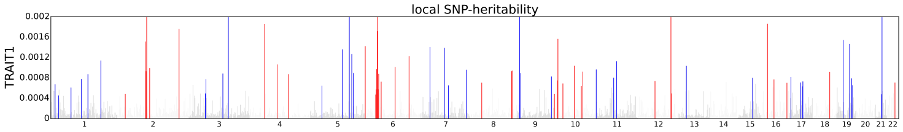
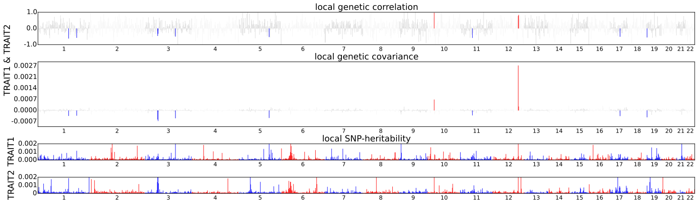

Visualizing local estimates¶
This page describes script to visualize local SNP-heritability estimates and local genetic covariance estimates.
Local SNP-heritability estimates¶
We provide script (misc/local_hsqg_manhattan.py) that makes Manhattan-style
plot for visualizing local SNP-heritability estimates. The script can be
executed as follows.
python misc/local_hsqg_manhattan.py \
--local-hsqg-est <local SNP-heritability output> \
--out <output file name e.g. trait1_local_hsqg.pdf> \
--trait-name TRAIT1
There following is an example figure generated by the visualization tool. Here, colored bars represent loci that have significant local SNP-heritability.

Local genetic covariance estimates¶
We provide script (misc/local_rhog_manhattan.py) that makes Manhattan-style
plot for visualizing local genetic covariance estimates. The script can be
executed as follows.
python misc/local_rhog_manhattan.py \
--local-rhog-est <local genetic covariance estimates output> \
--local-hsqg-est <local SNP-heritability output trait 1> <local SNP-heritability output trait 2> \
--out <output file name e.g. trait1_trait2_local_rhog.pdf> \
--trait-names TRAIT1 TRAIT2
Similarly, colored bars represent loci that have significant local genetic covariance.
